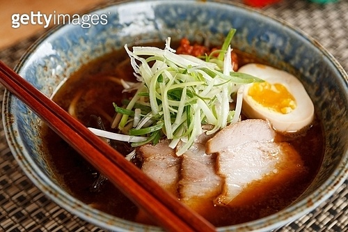

Japan Food Menu
차슈 라멘

재료 : 돼지등뼈 2kg, 통후추, 알 커피 1T, 등뼈 육수 8컵, 미소된장 1/2컵, 설탕 1T, 풀무원 튀지기않은 라면 4봉지, 간장 6T, 쪽파 4대, 차슈 12점, 숙주
① 돼지등뼈는 찬물에 담가 핏물을 빼줌니다.
②핏물빼준 등뼈를 통후추, 알커피, 대파, 마늘을 넣어 끓여주세요(대파, 마늘,양파껍질이 없어도 괜찮치만 넣어주시는게 잡내잡아주기 좋아요.) 뽀얗게 우러나올정도로 끓여주세요.
③끓인 등뼈육수를 식혀 기름을 걷어주세요.
④돼지등뼈 육수 8컵에 미소된장 1컵 (100ml) , 설탕 1T, 간장6T를 넣어 미소라멘 육수를 끓여주세요
⑤국물을 끓여줄때 다른냄비에 달걀을 삶아주시고, 숙주 씻어주시고, 꽃어묵과 쪽파를 썰어주세요..
⑥라면봉지만있지만 풀무원 튀지기않은 사리면을 끓여 찬물에 씻어준후 그릇에 1인분씩 나눠담고 미소라멘 육수를 담고 꽃어묵, 쫑쫑썬 쪽파, 삶은달걀, 차슈, 숙주 한줌을 담아내면 완성
Mascot

Social Network Service